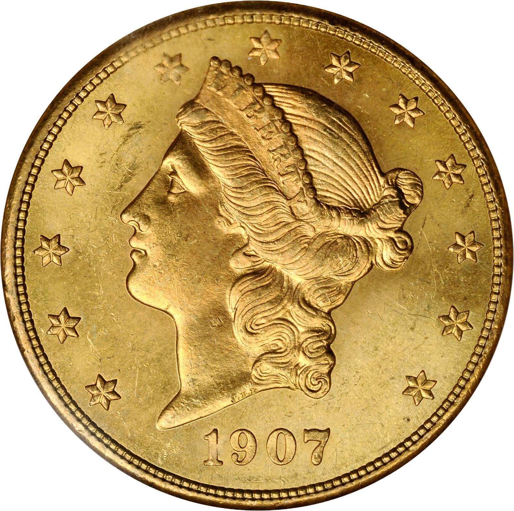
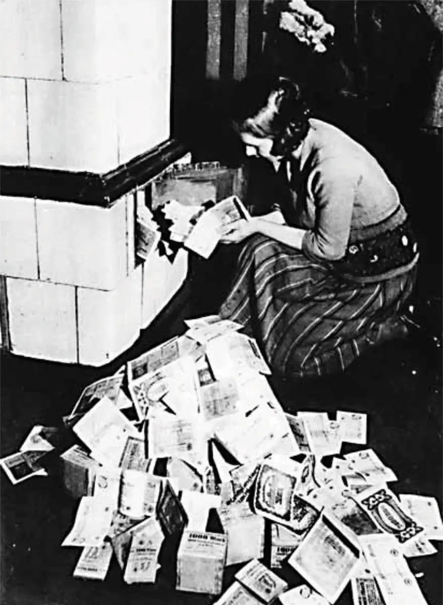
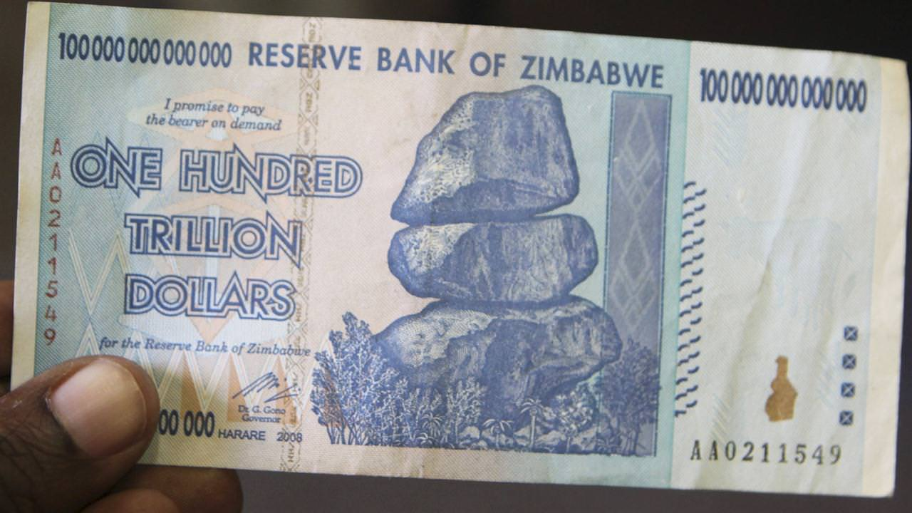
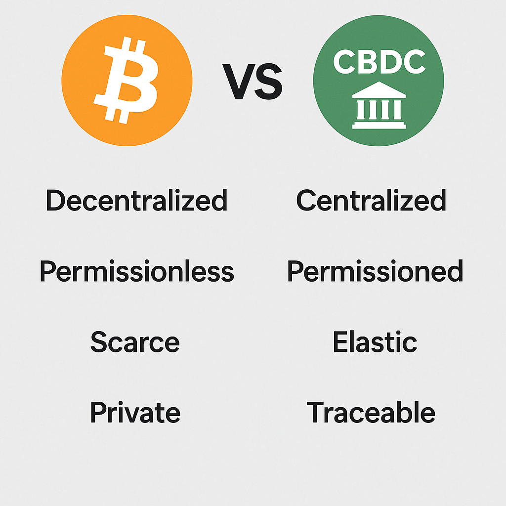

A History of Global Monetary Standards
The Quest for Sound Money: From Tangible Value to Abstract Promises, and Back?
I. Commodity Money
Humanity's earliest monetary systems emerged from the direct utility of goods. Money was the commodity, valued for its use or established social convention. This represented a step beyond simple barter, providing a more common medium but still tied to physical utility and local availability. The "hardness" (difficulty to produce additional units) varied, impacting their ability to hold value over time (temporal salability). Their spatial salability (ease of use across distance) was often poor due to bulk or spoilage.
Origins: From Barter to Common Commodities

Preceding formal money, direct barter (goods for goods) dominated. Gradually, certain widely desired commodities like cattle (pastoral societies), salt (Africa & Europe), and grain (Mesopotamia) emerged as early forms of money. Their value was often limited by poor spatial salability (difficulty of transport) and temporal salability (spoilage or high production rates if price rose).
Challenge: Low salability across time (perishability, ease of increased production) and space (transport costs).
Shells, Beads, and Ornamental Monies

Cowrie shells (Indo-Pacific, Africa, China) and Wampum beads (Native North America) became widespread commodity monies. Their uniformity, durability, and relative difficulty to "produce" (especially inland) gave them better temporal salability than many other commodities. However, their spatial salability remained limited compared to metals.
Fiat Standard Insight: Even early commodity monies were chosen for properties resembling "hardness." However, vulnerability to new supply discoveries (like Rai stones with Captain O'Keefe) demonstrates the importance of robust scarcity. (Ammous, The Fiat Standard, Ch. 4)
II. Classical Coinage
The invention of coinage marked a pivotal step: metals, already valued for their hardness (scarcity and difficulty to produce) and desirable properties, were now standardized by weight and purity, often under state authority. This significantly improved the spatial salability of money, making it more efficient for trade and tax collection. However, state involvement also introduced the perpetual temptation for rulers to debase the currency (e.g., the Roman Denarius) for short-term fiscal gain, undermining its temporal salability and providing early lessons in inflation.
The Lydian Innovation: Electrum Coins

Kingdom of Lydia (Western Anatolia) pioneers the first true coins from electrum (a natural gold-silver alloy), stamped with official insignia. This innovation improved verifiability and acceptance, enhancing spatial salability. The metallic nature (gold/silver) ensured good temporal salability.
Parallel Developments: Greece, India, China

- Greek Drachma: Silver coinage, like the Athenian Owl Drachma (typically ~4.3g of high-purity silver), became dominant in Mediterranean trade, valued for its consistent quality and metallic soundness.
- Indian Karshapana: Punch-marked silver coins emerged, facilitating regional commerce.
- Chinese Coinage: Cast bronze spade and knife money, later evolving into round coins with holes (e.g., Ban Liang, Wu Zhu), served vast internal markets.
Roman Coinage: Denarius & Aureus - Rise and Debasement

Rome's silver Denarius (initially ~4.5g, >95% pure silver) and gold Aureus (initially ~8g gold) facilitated imperial expansion due to their relative soundness and wide acceptance. However, systematic state-led debasement (reducing silver/gold content to fund expenses) began with Nero and accelerated dramatically by the 3rd Century AD, destroying the currency's temporal salability and leading to hyperinflation.
Debasement: Denarius silver content fell to <5% by Gallienus' reign, leading to severe economic disruption, a recurring theme with state-controlled money losing its hardness.
Byzantine Solidus: A Beacon of Stability

Constantine I introduced the gold Solidus (~4.5g, high purity gold). It maintained its weight and fineness for over 7 centuries, becoming the trusted international currency of the Mediterranean, underpinning Byzantine economic power. Its consistent quality and recognized authority gave it excellent temporal and spatial salability, becoming the "dollar of the Middle Ages."
Global Impact: Its stability was key for long-distance trade; widely imitated (e.g., early Islamic Dinar).
III. Intermediate & Globalizing Standards
Following Rome's decline, new economic centers emerged. Islamic Caliphates established sound coinage like the Dinar (gold) and Dirham (silver), prized for their purity. China's paper money experiments demonstrated the perils of state over-issuance. Italian city-states revived gold coinage ( Florin, Ducat ), which gained international trust. Later, New World silver, minted as the Spanish Silver Dollar , created a global metallic standard with unprecedented spatial salability , though still subject to supply inflations and the debasement tendencies of empires.
Islamic Gold Dinar & Silver Dirham

The Umayyad Caliphate introduced the standardized Gold Dinar (typically ~4.25g gold, inspired by the Solidus) and Silver Dirham (typically ~2.97g silver). These generally sound currencies, valued for their consistent weight and high purity, fueled extensive trade networks from Al-Andalus (Spain) to India and China due to their strong temporal and spatial salability.
Chinese Paper Currency: Promise & Peril of Early Fiat

Various Chinese dynasties (Song, Jin, Yuan) developed paper money (e.g., Jiaozi). While offering superior spatial salability over coins for large transactions, repeated state over-issuance, particularly under the Yuan and early Ming, led to hyperinflation and loss of faith, destroying its temporal salability. This highlighted the core problem of money controlled by the state: the temptation to debase it for fiscal needs.
Fiat Standard Insight: Early paper money demonstrated that value dictated by authority, without a hard anchor, is prone to over-issuance and collapse. (Ammous, The Fiat Standard, Ch. 3)
European Gold Revival: Florin & Ducat

Italian maritime republics reintroduced gold coinage: the Florentine Florin (~3.54g, 24-carat gold) and Venetian Ducat/Sequin (similar high weight/purity). Their stability, recognizability, and metallic soundness made them dominant, trusted currencies for high-value European commerce for centuries, showcasing strong temporal and spatial salability.
The Spanish Silver Dollar: First True Global Currency

Vast silver from Spanish American mines led to the mass minting of the Spanish Silver Dollar (Real de a Ocho, ~25.5g fine silver). Its uniformity and wide availability (high spatial salability) made it the dominant international trade currency for over 200 years, accepted across Europe, the Americas, and Asia (especially China, becoming a de facto standard there).
Impact - Price Revolution: The massive silver influx into Europe led to prolonged general price inflation (16th-17th centuries), illustrating the quantity theory of money, even for a relatively hard commodity.
IV. The Classical Gold Standard
The 19th and early 20th centuries witnessed gold as the international monetary anchor, representing peak sound money in practice. Nations formally defined their currency units (e.g., Pound Sterling, US Dollar ) as specific gold weights, creating fixed exchange rates and monetary discipline. This fostered global trade but was ultimately undone by war's fiscal demands. Critically, gold's spatial salability relied on an increasingly centralized banking infrastructure (settling claims on gold rather than moving physical gold). This infrastructure was vulnerable to state capture and manipulation, paving the way for the fiat standard, as seen in Britain's "unofficial war on gold" starting in 1914-1915.
Great Britain & The Gold Standard: The "Neverending Bank Holiday"

Britain formally adopted the gold standard in 1816, with the Pound Sterling (£) redeemable for gold sovereigns (7.322g fine gold). This system promoted long-term price stability and facilitated international trade during Pax Britannica. However, WWI led the Bank of England to suspend gold redeemability (the "Neverending Bank Holiday" started July 31, 1914) and promote notes via appeals like the August 6, 1915 directive. This was a critical step towards fiat, exploiting gold's reliance on bank-issued paper for practical spatial salability.
Fiat Standard Insight: The WWI suspension of gold convertibility and state promotion of paper notes in Britain was the genesis of the fiat standard. It demonstrated how states could detach currency from its metallic backing to finance activities like war, leveraging the public's reliance on bank-mediated gold claims. (Ammous, The Fiat Standard, Ch. 1 & 2)
United States Joins the Gold Standard
The US formally adopted the gold standard with the Gold Standard Act of 1900 (1 USD = ~1.505g fine gold). This period saw significant US industrial growth. Domestic gold convertibility was suspended in 1933 during the Great Depression, and gold ownership by citizens criminalized, further eroding the principles of sound money and paving the way for greater state control over the monetary system.
Interwar Period: Breakdown & Flawed Restoration Attempts
WWI led to widespread suspension of gold standards. Attempts to restore it (e.g., Gold Exchange Standard via Genoa Conference 1922) were fragile, often relying on major currencies like the Pound and Dollar as reserves, which themselves had diluted gold backing. This exported inflation and created systemic instability. Competitive devaluations and economic nationalism contributed to the Great Depression.
Weimar Hyperinflation (Germany 1921-23): A catastrophic example of a state resorting to the printing press after abandoning gold backing, destroying savings and social order.
V. The Global Fiat Experiment
The Bretton Woods system (a gold-exchange standard centered on the US Dollar ) collapsed in 1971, ushering in purely fiat currencies—government-issued money unbacked by any physical commodity, its value dictated by authority. This "Fiat Standard" is characterized by debt-based money creation ("fiat mining" via lending) , centralized control (the US Federal Reserve as a global "full node" with other central banks as regional nodes), persistent inflation, destruction of savings leading to "universal debt slavery," and boom-bust cycles. It "solved" gold's spatial salability problem by making money purely informational, but at the tremendous cost of its temporal salability (soundness) and subjecting it to political whim.
Bretton Woods: Dollar Hegemony, Fraying Gold Link
The USD, pegged to gold at $35/ounce (convertible only for foreign central banks), became the world reserve. Other currencies pegged to the USD. This "gold-exchange standard" relied on US commitment to maintain gold backing, which eroded due to domestic spending and war finance (Triffin Dilemma), as the US effectively exported inflation.
Fiat Standard Insight: Bretton Woods institutionalized the US dollar (and the Federal Reserve) as the central node in a global monetary network topology, where other national currencies became derivatives of the dollar, which itself was only tenuously linked to gold. (Ammous, The Fiat Standard, Ch. 2, 3 & 7)
Nixon Closes the Gold Window: The Fiat Standard Fully Operable
President Nixon unilaterally suspended USD convertibility to gold, definitively ending the Bretton Woods system. This launched the era of pure fiat money worldwide, where currency value is unbacked by any physical commodity and is managed (manipulated) by central banks. The "Fiat Standard" became fully operational.
The Fiat Standard Installed: This marked the final detachment of global money from physical scarcity, completing a process started decades earlier. (Ammous, The Fiat Standard, Ch. 1 & 2)
The Age of Pure Fiat: Debt, Inflation, and Distorted Time Preference
National currencies (USD, EUR, JPY, etc.) operate as unbacked fiat. This era is characterized by:
- Persistent Inflation & Debasement: Continuous erosion of purchasing power.
- "Fiat Mining" (Credit Expansion): Money creation through lending fuels debt cycles and "universal debt slavery."
- Hyperinflationary Episodes: (e.g., Zimbabwe, Venezuela) demonstrate fiat's failure mode.
- Distortion of Time Preference: Easy money encourages consumption over saving, leading to malinvestment and societal short-termism (e.g., in architecture, food quality "Fiat Food").
Fiat Standard Insight: Fiat money is debt-based, created via lending ("fiat mining"). This incentivizes indebtedness ("debt slavery") and high time preference, destroying savings and leading to widespread economic distortions, including in food ("Fiat Food") and science ("Fiat Science"). (Ammous, The Fiat Standard, Part I & II)
VI. Digital Sound Money: Bitcoin - The Fiat Liquidator?
Bitcoin emerged as a technological response to the fiat standard's inherent flaws. It's a digitally native, absolutely scarce (hard) asset, operating on a decentralized, censorship-resistant network. Unlike fiat, it is not debt-based, and its supply is programmatic and unchangeable ( temporal salability ). Bitcoin offers vastly superior spatial salability to gold without requiring centralized intermediaries, positioning it as a potential "fiat liquidator" and a return to sound money principles, potentially reversing fiat-induced high time preference.
Bitcoin's Genesis: An Engineered Solution to Fiat's Flaws

Satoshi Nakamoto's Bitcoin was launched during the 2008 financial crisis. The Genesis Block's message ("Chancellor on brink of second bailout for banks") critiques the fiat system's instability. Bitcoin is an engineered monetary technology based on proof-of-work and a fixed supply, contrasting with fiat's evolution from political expediency and its debt-based nature.
Fiat Standard Insight: Bitcoin is "anti-fiat technology." Its decentralized proof-of-work and difficulty adjustment create verifiable digital scarcity and hardness, offering a debt-free alternative to fiat's centralized, inflationary nature. (Ammous, The Fiat Standard, Ch. 12 & 15)
The Halvings: Programmatic Scarcity & "Digital Gold"

Bitcoin's new supply issuance is halved approximately every four years ("halvings"), making its inflation rate predictably decline towards zero, with a final fixed supply of 21 million coins. This "Difficulty Adjustment: The Secret Sauce" ensures its hardness, contrasting with fiat's politically driven elastic supply, reinforcing Bitcoin's role as "digital gold" with superior temporal salability.
Bitcoin's Potential: Neutral Global Currency & Superior Spatial Salability
Bitcoin enables final settlement across borders in hours, permissionlessly. This superior spatial salability—compared to gold (costly/slow physical movement) and fiat (reliant on centralized, politicized banking networks)—positions it as a potential neutral global currency. Its debt-free nature offers an escape from the "universal debt slavery" of the fiat standard.
Fiat Standard Insight: Bitcoin's superior spatial salability over gold and its hardness over fiat could allow it to "fix" the problems of the fiat standard by demonetizing debt and offering a sound, neutral settlement layer. (Ammous, The Fiat Standard, Ch. 12 & 17)
Bitcoin vs. CBDCs & The Fiat System: Digitized Control vs. Decentralized Soundness
Central Bank Digital Currencies (CBDCs) are emerging state responses. However, CBDCs are essentially digitized fiat, retaining centralized control, programmability for surveillance/social engineering, and inflationary potential. They represent the fiat ideal of total control, contrasting sharply with Bitcoin's decentralized, permissionless, and scarce nature.
Core Conflict: The battle between decentralized, hard money principles (Bitcoin) and centralized, elastic, surveillance-prone fiat systems (including CBDCs).